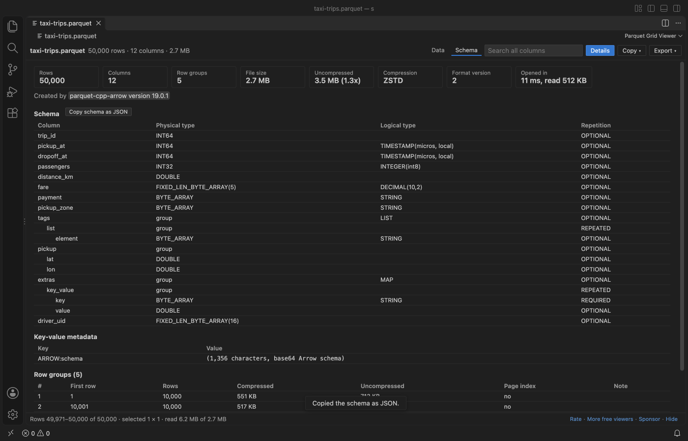

Open files in VS Code and Cursor / Tables and data
View the schema of a Parquet file
The schema of a Parquet file is in its footer, so you do not need Python, parquet-tools or Java to read it. Parquet Grid Viewer opens .parquet, .parq and .pq files in VS Code, and its Schema tab shows every column with its physical type, logical type and repetition, plus the row groups, compression, writer and key-value metadata, with Copy schema as JSON. Only the footer is read when the file opens, so this is quick even for large files, and it is free. For a folder of shards, Folder report and schema drift (Zovo Pro, USD 19 once, 3 free tries) lists the columns that are missing in some files or have another type.
Free, MIT license. Extension ID zovo.zovo-parquet-viewer, version 0.2.2. Needs VS Code 1.90.0 or newer.
Also free from Zovo: XLSX, Excel, CSV & Parquet Viewer, VS Code Marketplace · Open VSX (Cursor, Windsurf).

Steps in VS Code
- Install Parquet Grid Viewer from the Marketplace, or press Ctrl+P (Cmd+P on macOS) and run
ext install zovo.zovo-parquet-viewer. - Click the
.parquet,.parqor.pqfile in the Explorer. If another editor opens it, right-click the file and pick "Open in Parquet Grid Viewer". - Click the Schema tab at the top. The cards show the rows, columns, row groups, file size, uncompressed size, compression and format version, and the line under them names the program that wrote the file.
- Read the column table. Each column shows its physical type (such as INT64 or BYTE_ARRAY), its logical type (such as TIMESTAMP, DECIMAL(10,2) or STRING) and whether it is OPTIONAL, REQUIRED or REPEATED. The fields of LIST, MAP and STRUCT columns are indented below them.
- Scroll down for the key-value metadata, such as the Arrow schema that pyarrow writes, and the row group table with the rows, the compressed and uncompressed size and the page index of each row group.
- Click Copy schema as JSON to paste the schema into a ticket or a test.
Where Zovo Pro saves time
The grid, the Schema tab, Copy schema as JSON, filters, sort, search, copy and the CSV and JSON Lines export are free. The file is opened read-only and never changed.
A dataset split into hundreds of shards can change a type or lose a column in one file, and a job that reads the whole folder then fails. Folder report and schema drift lists every Parquet file in a folder and its subfolders with rows, size, row groups and compression, and lists each column that is missing in some files or has another type. It reads only the footers, so a folder of large files is quick. The other Pro tools write a column profile and compare two Parquet files.
With Folder report and schema drift (Zovo Pro)
- Right-click the folder in the Explorer and pick "Zovo Pro: Folder report and schema drift", or run "Parquet Grid Viewer: Folder report and schema drift of Parquet files (Zovo Pro)" from the Command Palette and pick the folder.
- Read the Markdown report. Under Schema drift it says "Every file has the same columns with the same types", or lists each column that differs and in how many files.
- Click Save as CSV in the message to keep the file table. A try counts only when the report is on screen.
Folder report and schema drift works 3 times on your computer before it asks for a license, and a try counts only when you get a result. Opening a file shows no popup and no countdown.
Zovo Pro costs USD 19 once. It is not a subscription, and it turns on the Pro tools in every Zovo extension, not only Parquet Grid Viewer. After a card payment (Stripe) your license key shows on the next page. In VS Code, run "Zovo Pro: Enter Zovo Pro license key" from the Command Palette and paste it. The key is checked on your computer, with no network call. With GitHub Sponsors, pick the "$19 one time" tier, then run "Zovo Pro: I already paid: unlock with GitHub Sponsors" and sign in with the same GitHub account. With PayPal, send USD 19 with "Zovo Pro" in the note and the key comes by email within a day.
A team of 5: USD 59 once, by card or by PayPal. Every rule and every Pro tool is on the Zovo Pro page.
Steps in Cursor, Windsurf or VSCodium
- Open the Extensions view with Ctrl+Shift+X (Cmd+Shift+X on macOS).
- Search for
zovo.zovo-parquet-viewerand click Install. Cursor, Windsurf and VSCodium install from Open VSX, where it is published aszovo/zovo-parquet-viewer. - If your editor has no gallery, download the .vsix from the Open VSX page and run "Extensions: Install from VSIX...".
- Then use it the same way as in VS Code.
What Parquet Grid Viewer handles
- Physical types such as INT32, INT64, INT96, DOUBLE, BYTE_ARRAY and FIXED_LEN_BYTE_ARRAY.
- Logical types such as TIMESTAMP, DATE, DECIMAL, STRING, UUID, LIST and MAP, and nested STRUCT fields.
- Snappy, Gzip, Zstd, Brotli, LZ4 and LZ4_RAW compression.
- Key-value metadata, such as the Arrow schema and the pandas metadata.
What it does not do
- Encrypted Parquet files (Parquet Modular Encryption) show a message. The viewer does not ask for keys.
- Metadata larger than 256 MB shows a message (setting
parquetViewer.maxFooterMB). - The viewer is read-only. It does not change the schema.
- The folder report looks up to three levels of subfolders deep, takes up to 5,000 files, and skips folders whose names start with a dot.
Other options
- pyarrow.
pyarrow.parquet.read_schema("file.parquet")prints the schema. Needs Python. - DuckDB.
DESCRIBE SELECT * FROM 'file.parquet'lists the columns and types, andparquet_schema()gives the raw schema. - parquet-cli. The Apache Parquet command line tool. Its
schemacommand prints the schema. Needs Java.
Install counts and Open VSX status were checked on 13 November 2026. Descriptions in quotes are the extensions' own.
Questions
Does it read the whole file to show the schema?
No. It reads the footer only. The 2.7 MB file in the picture opened in 11 ms after reading 512 KB.
Can I see the schema of a .parq or .pq file?
Yes. .parquet, .parq and .pq files all open in Parquet Grid Viewer.
Does it work in Cursor or Windsurf?
Yes. Cursor, Windsurf and VSCodium install extensions from Open VSX. Search for the extension in their Extensions view and install it there.
More about Parquet Grid Viewer
Read the Parquet Grid Viewer page for every feature and setting, or the source code on GitHub.
Related guides
- XLSX, Excel, CSV & Parquet Viewer on the VS Code Marketplace (also on Open VSX). Opens xlsx, xls, csv and parquet files as a sortable table with SQL filters.
- Use a Parquet viewer in VS Code
- Convert a Parquet file to CSV or JSON Lines
- Find out why a Parquet file will not open
- Open an Excel .xlsx file in VS Code
Support this work
If this extension saves you time, you can support the work on GitHub Sponsors. Monthly tiers start at $5, and one-time tiers start at $15. Sponsorship is optional, and the tool works the same without it.
Need your format supported?
Open a format request with a sample file, and I reply there whether it can be done. For USD 299 once, through this GitHub Sponsors tier, I add your file format or a missing feature to this extension, with tests, within 7 days.